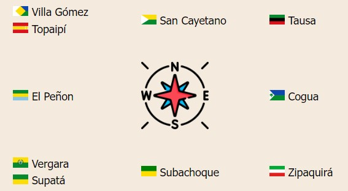

Ubicación geográfica
Ubicación geográfica
 ¿Como llegar a Pacho desde Bogotá?
¿Como llegar a Pacho desde Bogotá?
 Flora
Flora

Con una extensión territorial de 403 km² y ubicado en un punto central, ligeramente al norte del departamento de Cundinamarca, el municipio se encuentra relativamente cerca de la ciudad capital del país, lo que permite contar con gran abastecimiento insumos y ser la ruta comercial para municipios aledaños ubicados al norte de Pacho.
El municipio límita en total con 10 municipios al rededor de todo su perímetro, entre los municipios más destacables se encuentra Zipaquirá, Subachoque, Cogua y Vergara; la siguiente imagen muestra los municipios con los cuales límita y los puntos cardinales de los mismos.

 Fauna
Fauna

Con una altura media de 1905 m.s.n.m. y por la condición de estar empotrado en la parte occidental de la cordillera oriental, el territorio posee los tres pisos térmicos lo que permite tener temperaturas de los 5 grados centígrados en páramo y 28 grados en parte más baja sobre la zona cálida.
La temperatura media del aire presenta muy poca variación, los valores fluctúan entre 22.9°C y 25.1°C; en relación con las temperaturas máximas, estas varían entre 27.6°C y 25.0°C; en cuanto a las temperaturas mínimas se presentan variaciones más pronunciadas con registros que fluctúan entre 20.4°C en febrero con el más bajo y 23.2°C en septiembre como el más alto. Por lo anterior, el municipio cuenta con gran diversidad vegetal y animal, encontrando en este desde mantiz religiosas hasta osos peresozos o desde flores de heliconia hasta el pino romerón o arboles de chicala.
[Volver al inicio]
 Clima
Clima